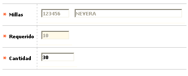
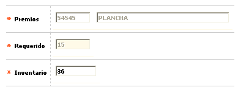

|
Redención de puntos |
La presente forma o pantalla tiene una doble funcionalidad, de un lado permite consultar los puntos de que dispone un cliente por tarjeta(s) y, de otro lado, la(s) clase(s) de premio(s) que puede redimir, si los puntos disponibles lo permiten. Los bloques Millas y Premios despliegan datos de acuerdo con el mecanismo de redención asociado a cada una de las tarjetas que posea el cliente y que hagan parte de alguno de los esquemas de puntaje. Así mismo, se dispone de un botón especial, descrito al final del documento, que permite la generación de archivos (interfaces) con información sobre las redenciones, principalmente de millas, de forma masiva o individual.
Filtro: El formulario cuenta con un filtro inicial de búsqueda, con los cuales se podrá realizar la consulta a través de los campos Tipo y Número de identificación:

|
Mecanismo de redención |
Campo de salida que muestra el mecanismo asociado al producto en la opción esquemas de puntaje del mismo módulo, y que a excepción del mecanismo de Abono, los datos correspondientes a Millas y Premios son reflejados en los bloques subsiguientes. |
|
Número de tarjeta |
Contiene el número de cada una de las tarjetas que posea el cliente y cuyo producto asociado se encuentre parametrizado en alguno de los esquemas de puntaje. |
|
Tipo de tarjeta |
Indica la clase tarjeta, Principal o Extendida, asociada al número anterior. |
|
Devueltos |
En este campo aparece la información concerniente a los puntos que se han devuelto al cliente por concepto de reversiones de premios hechos por éste bajo cualquier circunstancia válida para tal evento. |
|
Acumulados |
En este campo se muestran los puntos disponibles que el cliente posee a la fecha de la redención de puntos; una vez se grabe la redención en curso (la que se está registrando), la pantalla actualiza el nuevo monto. |
|
Puntos |
En este campo se refleja la sumatoria o el total de puntos que se harán efectivos mediante la redención, en curso, del premio o las millas. |
El formulario contiene las opciones Actualizar, Millas y Premios.
Actualizar: Si el usuario invoca la opción Actualizar se despliega un nuevo formulario en cual el único campo modificable es Puntos:

|
Puntos |
En este campo la pantalla permite digitar el número de puntos a redimir por tarjeta, pudiendo así utilizar los puntos de otras tarjetas, a su nombre, siempre que el mecanismo de redención como el monto disponible lo permitan, para redimir un premio o millas en particular. El sistema controla que los puntos a redimir por tarjeta no excedan el valor disponible por cada una. |
Millas: Conjunto de campos que además de ilustrar los diferentes planes de millas disponibles para su redención, permiten seleccionar la cantidad de cada uno de ellos, reflejando el subtotal por cada plan y el total por este tipo de mecanismo, en el último campo de la columna Puntos.

Actualizar: Si el usuario invoca la opción Actualizar se despliega un nuevo formulario en cual el único campo modificable es Cantidad:

|
Cantidad |
En este campo la pantalla permite digitar el número de puntos a redimir por tarjeta, pudiendo así utilizar los puntos de otras tarjetas, a su nombre, siempre que el mecanismo de redención como el monto disponible lo permitan, para redimir un premio o millas en particular. El sistema controla que los puntos a redimir por tarjeta no excedan el valor disponible por cada una. |
Premios: Conjunto de campos que además de ilustrar los diferentes premios (mercancías, electrodomésticos, etc) disponibles para su redención, permiten seleccionar la cantidad de cada uno de ellos, reflejando el subtotal por cada premio y el total por este tipo de mecanismo, en el último campo de la columna Puntos.

Actualizar: Si el usuario invoca la opción Actualizar se despliega un nuevo formulario en cual el único campo modificable es Inventario:

|
Inventario |
Campo que ilustra la cantidad de premios disponible al momento de la redención, y se corresponde con el campo Saldo inventario de la opción Premios puntaje. |